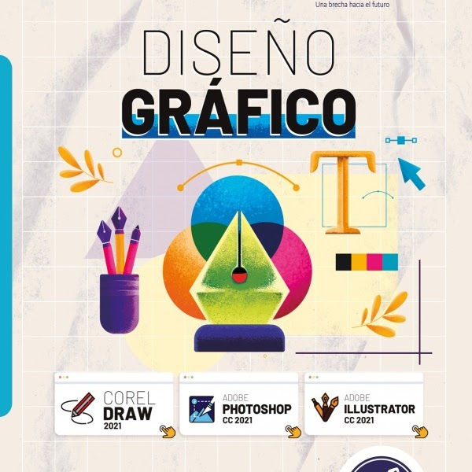

LABORATORIO
LIC.RENE OSWALDO MAZZONI
En la clase de laboratorio pone en practica su imaginacion apoyandose de programas los cuales son:
-Adobe Illustrator
-Adobe Photoshop
Con ellos se logra diseñar y hacer foto montajes
>LIBRO UTILIZADO
PROGRAMACION
LIC.MARIELISA TORRES
En la clase de programacion logras crear formularios y bases de datos apoyandote de programas como ser:
-Visual Studio Code
-Visual Studio
-Mysql
>LIBRO UTILIZADO
DISEÑO WEB
LIC.YESSENIA ANTUNEZ ERAZO
En la clase de diseño web aprendes a diseñar paginas web con codigos apoyandote de programas como ser:
-Blog de notas
-Adobe DreamWeaver
>LIBRO UTILIZADO
MANTENIMIENTO Y REPARACION
LIC.LUIS FERNANDO HENRIQUEZ
En la clase de Mantenimiento y reparacion aprendes sobre los sistemas operativos y corregir errores de sistema de las computadoras dando mantenimiento correctivo o preventivo
>LIBRO UTILIZADO

REDES INFORMATICAS
LIC.LUIS FERNANDO HENRIQUEZ
En la clase de redes informaticas aprendes todo relacionado con cableado para sistemas electronicos
>LIBRO UTILIZADO